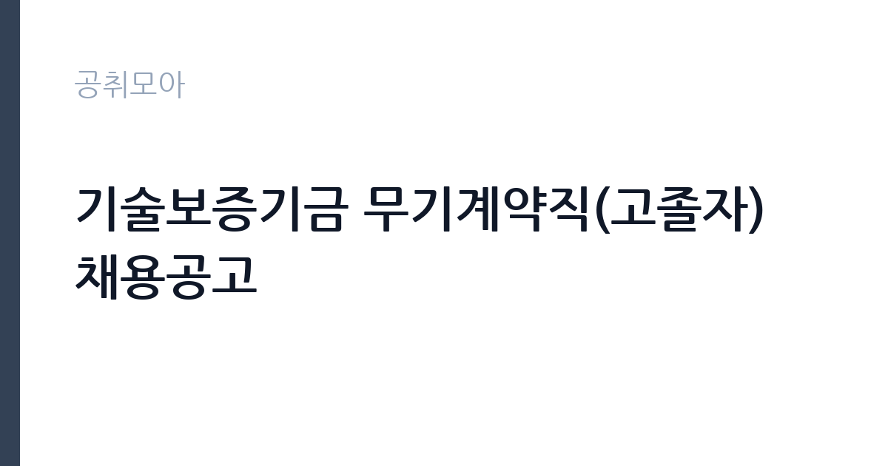

[공공기관] 기술보증기금 무기계약직(고졸자) 채용공고
기술보증기금 · 서울 · 마감 2026-11-17 (D-15) · 출처 잡알리오

한눈에 보는 모집 조건
| 기관 | 기술보증기금 |
|---|---|
| 공고명 | 기술보증기금 무기계약직(고졸자) 채용공고 |
| 고용형태 | 공무직 |
| 근무지 | 서울 |
| 게시일 | 2026-11-02 |
| 마감일 | 2026-11-17 (D-15) |
지원자격, 이렇게 읽으세요
- 채용 확정 후 즉시 근무 가능한 자
공무직 근로자는 공무원이 아니라 근로기준법이 적용되는 근로자이지만 기간의 정함이 없는 무기계약으로 채용되는 경우가 많아 정년까지 근무가 가능합니다. 채용은 공무원 시험과 달리 기관의 자체 전형으로 진행되고 인사 규정과 임금표를 적용받습니다. 이번 공고는 기술보증기금에서 직접 진행하는 자체 전형으로, 응시자격과 제출서류는 공고문에 항목별로 제시됩니다. 이 전형은 고졸자를 대상으로 하며, 성별·학력·전공 제한이 없는 블라인드 채용으로 운영됩니다. 채용 확정 후 즉시 근무가 가능해야 하고, 기술보증기금 인사규정상 채용제한 사유에 해당하지 않아야 합니다. 대졸 이상 학력자는 지원할 수 없으므로 학력 요건을 먼저 확인해야 합니다. 우대 사항과 제출서류는 공고문에 제시되어 있으며, 무기계약직 전환 조건이나 수습 기간이 있는지도 함께 확인하십시오. 서류는 접수 마감 이후 보완이 되지 않으므로 자격 요건과 증빙 서류를 마감 전에 모두 갖춰야 합니다. 공고문에 명시된 우대 사항은 해당 여부를 확인해 증빙을 첨부해야 가점이 반영됩니다. 자격증은 유효 기간과 등록 상태를 확인해야 합니다. 갱신이 필요한 자격이라면 갱신 여부를 먼저 점검하십시오. 이 공고 원문에 적힌 응시 조건 문구는 '성별·학력·전공 등 제한없는 블라인드 채용' / '기술보증기금 인사규정상 채용제한 사유에 해당되지 않는 자'입니다. 문구를 그대로 읽고 본인 해당 여부를 하나씩 표시해 두면 서류 단계에서 탈락하는 일을 줄일 수 있습니다.
이 공고의 포인트
이 공고의 첫 번째 포인트는 고용 형태입니다. 무기계약으로 채용되면 정년까지 근무가 가능해 재계약 부담이 없습니다. 반대로 기간제로 채용되는 공고라면 계약 기간을 먼저 확인해야 합니다. 두 번째는 업무 범위가 명확하다는 점입니다. 무기계약직(고졸자·사무지원) 직무로 채용되므로 배치 이후 담당 업무가 크게 흔들리지 않습니다. 세 번째는 근무지입니다. 서울 지역 근무로 접근성은 좋지만 그만큼 지원자가 몰리는 지역이므로 경쟁률을 넉넉히 잡아야 합니다. 지역 기반 채용이라 거주지와 통근 가능성이 실질적인 판단 기준이 됩니다. 같은 직무로 함께 올라온 공고 11건 가운데 마감이 중간에 위치하므로 다른 공고와 일정이 겹치는지 확인하십시오. 선발 인원은 공고문에 명시되어 있으니 모집분야 항목을 함께 확인하십시오.
전형은 어떻게 진행되나
전형은 서류심사와 면접심사를 기본으로 하고 직무에 따라 필기나 실기, 체력검정이 추가됩니다. 서류 단계에서는 응시자격 충족 여부와 제출서류 형식을 확인하며 이 단계에서 탈락하는 지원자가 적지 않습니다. 면접은 직무 이해도와 경험을 확인하는 방식으로 진행되고 발표는 개별 통보나 홈페이지 게시로 이뤄집니다. 최종합격 이후에는 결격사유 조회와 채용 신체검사가 이어지며 이 절차에서 문제가 확인되면 합격이 취소될 수 있습니다. 구체적인 전형 단계와 배점은 공고문에 표로 정리되어 있으니 원문을 기준으로 준비하십시오. 응시 수수료가 있는 경우 환불 기준과 기한이 정해져 있으니 접수 전에 확인하십시오.
원문에서 확인한 전형 방식
- 고졸자 - 성별·학력·전공 등 제한없는 블라인드 채용 - 채용 확정 후 즉시 근무 가능한 자 - 기술보증기금 인사규정상 채용제한 사유에 해당되지 않는 자
이런 분께 추천해요
- 고졸 학력 요건을 충족하는 분
- 사무 지원과 고객 응대 경험이 있는 분
- 무기계약직으로 장기 근무할 의사가 있는 분
지원 전 체크리스트
- 응시자격 요건과 경력 기준을 충족하는가 — 경력은 증명서로 입증해야 합니다
- 무기계약 여부와 정년 기준을 공고문에서 확인했는가
- 제출서류 목록을 모두 준비했는가 — 누락 시 서류 단계에서 탈락합니다
- 접수 마감 2026-11-17 이전에 접수 방식을 확인해 제출했는가
모집 일정과 제출 타이밍
접수 마감은 2026-11-17이고 공고는 2026-11-02에 게시되었습니다. 준비 기간 15일 안에 서류 작성, 증빙 발급, 접수를 모두 마쳐야 하므로 주말을 포함해 일정을 미리 나누는 것이 좋습니다. 특히 경력 기술서나 직무수행계획서를 요구하는 공고는 작성에 시간이 걸리므로 첫날 초안을 잡으십시오. 서류 합격자 발표와 면접 사이 간격이 짧은 경우가 많아 면접 예상 질문은 서류 제출 전에 정리해 두는 편이 유리합니다. 마감 직전에는 접속이 몰리므로 여유를 두고 제출하십시오. 서류 발표일과 면접일 사이가 짧은 경우가 많아 면접 준비는 접수와 동시에 시작하는 편이 좋습니다. 서울 근무지는 대중교통 접근성이 좋은 대신 주차와 통근 시간이 변수입니다. 출퇴근 경로를 미리 확인하십시오. 마감까지 여유가 있어 자격 요건을 천천히 확인하고 준비할 수 있습니다. 선발 인원은 공고문의 모집분야 항목에 직종별로 제시되어 있습니다.
직무 이해하기: 공공기관
기술보증기금은 기술력 있는 중소기업에 보증을 제공하는 준정부기관입니다. 이번 무기계약직(고졸자) 채용은 고졸 학력자를 대상으로 하는 블라인드 전형이며, 배치 부서에서 사무 지원과 업무 보조를 맡습니다. 서류 접수와 확인, 전산 입력, 문서 정리, 창구·전화 응대가 기본 업무이고, 부서에 따라 보증 심사 보조나 사후 관리 지원이 붙습니다. 지점과 본부에 배치되며 근무지가 공고문에 제시됩니다. 무기계약직이므로 정년까지 근무가 가능하고 매년 임금이 조정됩니다. 업무 매뉴얼과 지침이 문서로 정리되어 있어 절차를 익히면 반복 업무는 빠르게 손에 붙습니다.
자기소개서 작성 팁
지원서는 사무·응대 경험을 구체적으로 쓰는 것이 효과적입니다. 아르바이트나 인턴, 동아리에서 맡았던 문서·정리 업무와 처리량을 수치로 제시하십시오. 엑셀이나 문서 프로그램 활용 수준을 밝히면 실무 연관성이 드러납니다. 고졸 채용이므로 학력 대신 성실성과 학습 속도를 근거로 보여주는 편이 유리합니다. 직무 경험이 많지 않다면 경험의 양보다 과정을 구체적으로 쓰는 편이 낫습니다. 어떤 상황에서 무엇을 판단했고 어떤 결과가 나왔는지 순서대로 서술하면 신뢰가 생깁니다. 지원 동기와 기여 방안은 한 문단씩 짧게 유지하고, 가장 자신 있는 경험에 분량을 몰아주십시오. 마지막 문장은 포부보다 구체적인 실행 계획으로 끝내는 것이 좋습니다.
면접 준비 포인트
면접에서는 사무 실무의 기본기와 근무 태도를 확인합니다. 여러 업무가 동시에 들어올 때 우선순위를 어떻게 정하는지, 창구에서 민원인이 화를 낼 때 어떻게 응대하는지 묻습니다. 블라인드 채용이므로 출신 학교나 가정환경을 묻지 않으며, 지원자는 경험과 태도로 답하면 됩니다. 장기 근무 의사와 지점 근무 수용 여부도 확인합니다. 답변은 상황, 판단, 조치의 순서로 정리하면 전달이 분명해집니다. 모르는 질문에는 모른다고 밝히고 확인 방법을 제시하는 편이 억지 답변보다 낫습니다. 마지막에는 근무 의사와 함께 2026-11-17 이후 일정에 언제든 응할 수 있다는 점을 전달하십시오. 면접은 공고문에 적힌 직무 내용을 얼마나 이해하고 있는지 확인하는 질문으로 시작하는 경우가 많으니, 모집분야 문구를 그대로 읽어 두는 것이 도움이 됩니다.
급여·근무조건 읽는 법
기술보증기금은 알리오 2025년 결산 공시 기준 일반정규직 1인당 평균보수 1억 18만원, 신입사원 초임 5,349만원, 무기계약직 1인당 평균보수 4,602만원으로 공시되어 있습니다. 이번 공고는 무기계약직이므로 위 무기계약직 평균보수가 비교 기준이 되고, 실제 초임은 기금의 무기계약직 임금표와 호봉에 따라 정해집니다. 평균보수는 기본급에 고정수당·성과상여금·급여성 복리후생비를 합산한 값입니다. 구체적 금액은 공고문 처우 항목에서 확인하십시오. 2026년 적용 최저임금은 시급 10,320원, 월 환산 2,156,880원(주 40시간·209시간 기준)입니다. 고용노동부 고시 제2025-47호로 확정된 금액입니다. 공고문에 금액이 제시되지 않은 항목은 원문 보수표나 처우 설명에서 확인해야 하며 확인되지 않은 수치는 쓰지 않는 것이 원칙입니다. 비교할 때는 월 급여뿐 아니라 상여·명절휴가비·복지포인트·초과근무수당까지 포함한 연간 총액으로 계산하십시오. 기간제라면 계약 기간 동안의 총액을, 무기계약이라면 호봉 상승과 정년까지의 누적 소득을 기준으로 판단하는 편이 정확합니다.
자주 묻는 질문
- 선발 인원은 몇 명인가요?
공고문의 모집분야 항목에 직종별 인원이 표로 제시되어 있습니다. 첨부된 공고문 원문에서 확인하십시오. - 근무지는 어디인가요?
서울 지역의 기술보증기금 소속 근무지입니다. 세부 주소와 출퇴근 조건은 원문 공고문에서 확인할 수 있습니다. - 보수는 얼마인가요?
채용 신분(공무직)과 기관 임금 규정에 따라 정해지며 구체적인 금액은 공고문 처우 항목에 제시됩니다. 금액이 공개되지 않은 경우에는 원문의 보수표를 확인하십시오.
함께 보면 좋은 공고
[공공기관] 2026년 한국특허정보원 체험형 청년인턴 채용 — 마감 2026-11-18[공공기관] 한국폴리텍대학 진주캠퍼스 행정지원직(사무직원 휴직 대체인력) 채용 공고 — 마감 2026-11-10[공공기관] 대구경북첨단의료산업진흥재단 2026년 3차 정원외 계약직원 채용공 — 마감 2026-11-17출처: 잡알리오 공개정보를 바탕으로 공취모아가 정리한 안내글입니다. 모집 조건·일정은 변경될 수 있으니 지원 전 반드시 원문 공고문을 확인하세요. 본 글은 정보 제공용이며 합격을 보장하지 않습니다.